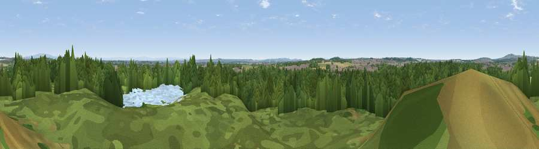

Viewpoint near Collins Green
#35422 in England · top 79% of its area beats it · near Collins GreenWhere it is
The exact computed spot (SJ 55125 93625). Click the marker for map links.
The view, rendered

A 360° render of this exact spot computed from the terrain model, tree cover and land cover — summer colours, afternoon light, calibrated against photographs of famous viewpoints. Real trees, hedges and buildings will differ in detail.
The panorama
Grey silhouette: terrain skyline in each direction (720 bearings, Earth curvature and refraction included). Dashed green: skyline with trees (+15 m) and buildings (+8 m) as obstacles. Blue strip: how far the ground is visible on each bearing.
Where the view opens
Wedge length = distance to the farthest visible ground on that bearing (vegetation-aware). Rings at 10, 25 and 50 km.
What fills the view
64% woodland · 13% grassland · 10% cropland · 9% built-up · 3% water
Angular shares of the visible panorama (visual magnitude), not map area. Landscape diversity 0.49 (0–1 Shannon).
Key numbers
More beautiful places nearby
The staircase of upgrades: each row has a higher view potential than everything closer. Driving times are estimates from straight-line distance, calibrated against real road routing — check an actual route before setting out.
| Place | Direction | Drive | Score |
|---|---|---|---|
| Viewpoint near Haydock | NNE · 3 km | ~7 min | 57.9 |
| Viewpoint near Haydock | NNE · 3 km | ~8 min | 61.1 |
| Viewpoint near Billinge | NNW · 8 km | ~16 min | 68.0 |
| Billinge Hill | NNW · 8 km | ~17 min | 73.8 |
| Viewpoint near Dalton | NNW · 15 km | ~27 min | 74.2 |
| Beacon Hill | S · 17 km | ~30 min | 77.3 |
| White Brow | NNE · 22 km | ~36 min | 82.9 |
| Warton Crag | N · 79 km | ~103 min | 83.2 |
53.43748, -2.67697 · source: screening · position refined by local search. Computed location — check access rights before visiting.